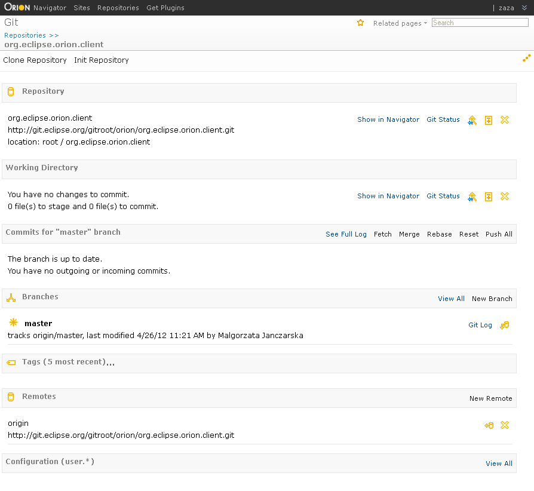

<map name="map">
<!-- #$-:Image map file created by GIMP Image Map plug-in -->
<!-- #$-:GIMP Image Map plug-in by Maurits Rijk -->
<!-- #$-:Please do not edit lines starting with "#$" -->
<!-- #$VERSION:2.3 -->
<!-- #$AUTHOR:tzarna -->
<area shape="rect" coords="2,48,113,73" href="git-repositories.html" />
<area shape="rect" coords="709,184,774,211" href="git-status.html" />
<area shape="rect" coords="589,183,705,216" href="navigator.html" />
<area shape="rect" coords="724,484,784,513" href="git-branches.html" />
<area shape="rect" coords="770,527,831,562" href="git-log.html" />
</map>
